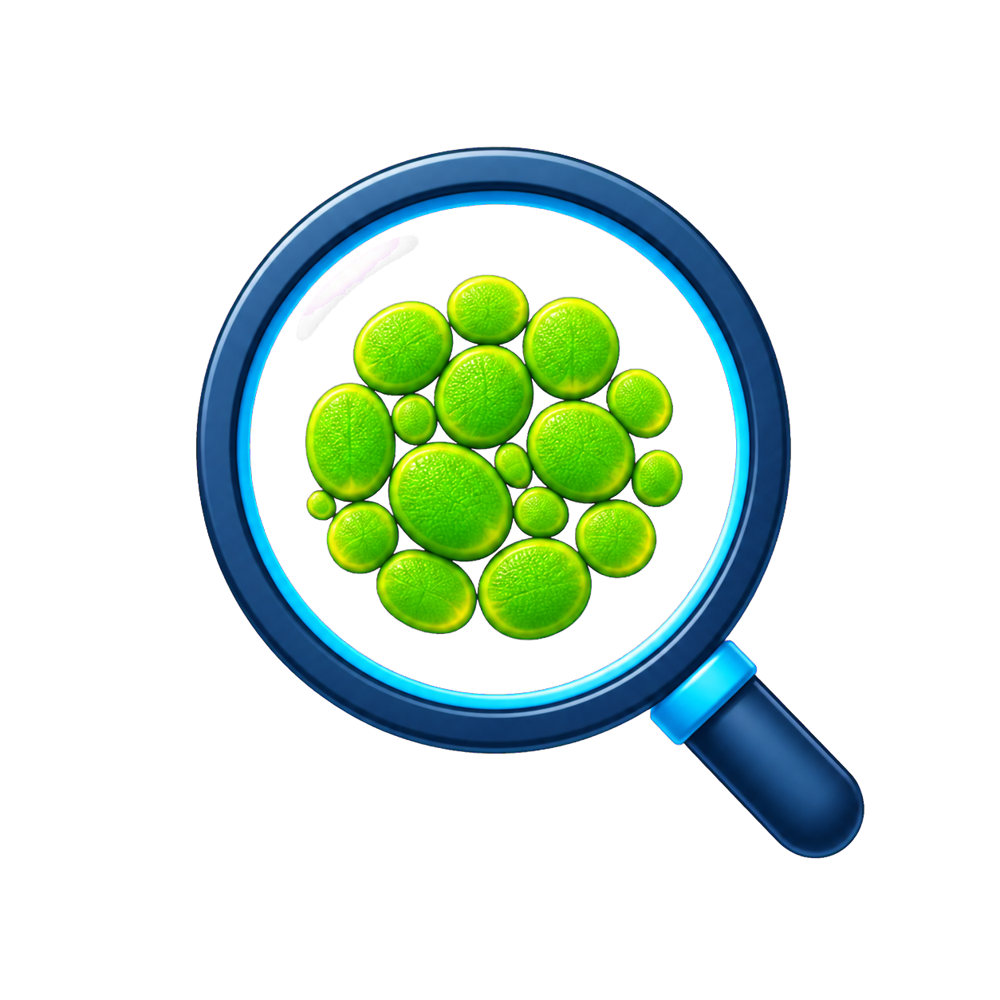
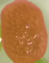

Prepare data
Box/mask annotation, model assistance, class-balancing augmentation and balanced/random splits.

WolffiaVISION STUDIOALL-IN-ONE AI IMAGE WORKFLOW
Annotation, training, evaluation, inference and analysis. A GUI image-analysis platform with user-defined detection classes, developed for Wolffia, with a configurable workflow for exploring other duckweed species.
Version 1.0.0 · 日本語 / English · Local image processing
01 / WORKSPACES
Box/mask annotation, model assistance, class-balancing augmentation and balanced/random splits.
Train or fine-tune YOLO, SegFormer and LRASPP-MobileNet. Inspect learning curves, metric slopes, validation results and held-out tests.
Still-image and continuous inference, crops, binary masks, RGBA images and orientation normalization.
Area, ellipse axes, circularity, CSV, distribution HTML, shape sorting and charts.
02 / ONE INDIVIDUAL
Follow individual A through an existing saved processing run.

Values from the saved CSV, measured using the orientation-normalized mask.
Axes are fitted-ellipse diameters. Values in pixels require image-scale calibration before conversion to physical units. Circularity approaches 1 for a circular shape.
The same detection is linked across stages by the crop manifest and an internal object ID.
This is a saved processing example, not a 1.0.0 accuracy benchmark.
03 / BUILD YOUR DATA
Supplied boxes are shown with class colors. The GUI supports selection, resizing, class changes and assisted labeling.
Inspect logs and curves in the GUI; configure early stopping, optimizer and training conditions. This diagram shows the interface concept, not performance data.
04 / INSIDE THE APP
Actual 1.0.0 screenshots. Click to enlarge. Detailed screens for all four spaces are in preparation. See the sample workflow above for a linked processing example.
COMPARE YOUR DATA
Add multiple files, choose columns and groups, and explore distributions and relationships. Save figures, tables and a self-contained HTML report.
05 / ADAPT TO YOUR IMAGES
Define YOLO class names and box labels, then train on your own images. The standard example uses vegetative, flowering and dead.
nc: 3
names:
- vegetative
- flowering
- deadChanging YAML alone does not teach a model new classes. Annotated data and training are required. Match inference YAML class IDs and their order to the trained model; automatic consistency checking does not cover every combination.
Adapt existing weights to explore differences in species, strains, magnification, lighting or backgrounds. Updates do not guarantee improved accuracy: evaluate on held-out test data. Current segmentation is binary target/background, not multiclass mask training.
GUI construction, data preparation and selected self-tests, not independent accuracy or complete cross-PC evaluation.
The same detection, segmentation and measurement workflow may be applicable to Wolffiella, Lemna, Spirodela and Landoltia with suitable annotated data and models. Direct transfer of the supplied models and accuracy on these genera are not validated.
Custom domain, binary hosting, detailed screens for all four spaces and independent accuracy evaluation.
| Item | Verified scope |
|---|---|
| OS / runtime | Windows x64 application built and self-tested on the development PC. Other Windows versions and Python-free PCs remain unverified. |
| CPU / GPU | CPU or compatible NVIDIA CUDA GPU selection. Build: PyTorch 2.12.1+cu126. Recommended RAM/VRAM and minimum driver versions are not established. |
| Storage | See the release information below for setup size. Allow extra space for installation, models, outputs and training. |
| Input images | JPG/JPEG, PNG, BMP, TIFF, WEBP. HEIC/HEIF depend on an additional decoder. Full format coverage in the EXE is not verified. |
| Annotation | YOLO: images and labels, matching TXT names (class_id, x_center, y_center, width, height; coordinates normalized 0–1). Masks: images and masks with matching PNG names. |
| Models | YOLO .pt and app-compatible SegFormer-B0 / LRASPP-MobileNetV3 checkpoints, not arbitrary architectures. |
| Outputs | Detection/crop images, masks, Original / Overlay / Mask / RGBA montages, normalize images, CSV, NPZ, JSON and distribution HTML, depending on the task. |
| Evaluation | YOLO: TP, FP, FN, WC (wrong class), precision, recall, F1, error rate and confusion matrices. Error rate=(FP+FN+WC)/(TP+FP+FN+WC). Training mAP and test-workspace metrics are distinct. No public accuracy benchmark is available. |
| Processing / network | Image processing runs locally. Model retrieval may use the network; all dependency communication has not been audited. This website has no image-upload feature. |
| Shape sorting | MF: mother-frond candidate; DF: daughter-frond candidate; Edge: truncated/non-elliptical candidate. Latest source uses PCA, 1–3 groups and ellipse agreement with per-image HTML audits, not biological identification. |
The public binary URL is not set. Once available, verify the version and SHA-256.
Run Setup.exe and choose a location. Open Japanese or English from the Start menu.
Open Inference / Processing → YOLO. Select images, weights and matching YAML, run and inspect results.
Back up presets, added models and results before updating; review the change log and repeat a known sample afterward.
WINDOWS / DESKTOP
Initial release · 1.0.0
A Windows application that processes images on your computer.
Download will be available when hosting is configured.
Source code ↗Unsigned release. See the release notes for the scope of verification.
DATASET ACCESS
Submit a request through the form. Approved applicants receive download details and a password separately.
Open request form ↗The form is not configured yet. No request is sent from this page.
This public getting-started page is accompanied by the English README, Japanese README, warnings and license guides. Word manuals and the development report will be published after disclosure review.
Routine workflows use the GUI. Setup, model/data preparation and troubleshooting may require technical assistance.
CPU is selectable. Runtime depends on the model, image size and computer; no throughput guarantee is provided.
YOLO supports class names, box labels and training data for custom training. Editing YAML alone is insufficient. Masks are currently binary.
Potentially. Annotate target-species images with boxes or masks; for YOLO, configure dataset paths and class names in YAML, then train or fine-tune. Define imaging conditions and how roots/fronds are labeled, and evaluate on held-out images. Editing YAML alone does not teach new species or classes.
In the local output folder selected for each task. Routine inference and analysis are grouped under output/practice/run_timestamp with 01_yolo, 02_crops, 03_segmentation and 04_features&analysis. Training logs and data.yaml stay in each fine-tune folder; test output can be placed beside weights in that training folder. Producing output does not establish correctness.
Not by elongation alone. Latest source compares masks with complete fitted ellipses. Segmentation errors also reduce agreement, so inspect the images and audit.
2026-10-23: Reorganized the long single page into six switchable views and documented class balancing, balanced splitting, training trends, RGBA previews and chart-specific options.
ABOUT & RESOURCES
Developed by Kento Kuwata. A Windows application originally developed for Wolffia image analysis.
Application source is prepared under AGPL-3.0. Third-party libraries retain their licenses. Models, samples and training images need separate terms and redistribution checks; do not infer them from the software license.
Explore other tools for duckweed and plant image analysis. Visit each project to see its workflows and usage.